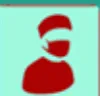
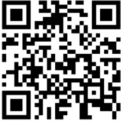
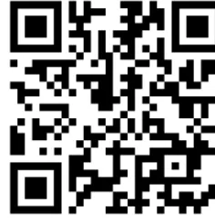
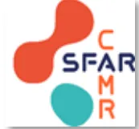

INTUBATION EN VENTILATION SPONTANÉE
SI DYSPNEE LARYNGEE : envisager une TRACHEOTOMIE SOUS AL
CRITÈRES D'INTUBATION EN VS (liste non exhaustive)
= intubation et ventilation jugées impossibles sous AG
CHOIX DE LA TECHNIQUE
Etape 1 : ANTICIPATION DES DIFFICULTÉS
Etape 2 : ANESTHÉSIE LOCALE ÉTAGÉE
Dose MAXIMALE
de lidocaïne :
4 à 6mg/kg
(cf verso)
Etape 3 : OXYGÉINATION, RÉALISATION DU GESTE
Etape 4 : GESTION DES DIFFICULTÉS
DÉSATURATION
SÉDATION INADAPTÉE
ÉCHEC D'INTUBATION EN VS
Etape 5 : APRÈS LA CHIRURGIE
Précautions pour l'ANESTHÉSIE LOCALE DES VAS :
- - Dose maximale de lidocaïne : 6mg/kg chez l'adulte,
4mg/kg si insuffisance rénale et hépatique, sujet âgé, dénutrition. - - Lidocaïne 5% (spray ou nébuliseur) : 1 spray = 8mg de lidocaïne.
- - Lidocaïne 10mg/mL : instillation par le canal opérateur du fibroscopie ( absorption plasmatique majorée par les muqueuses de l'arbre bronchique).
- - Limiter l'utilisation d'AL durant la chirurgie : calculer la dose totale administrée.
Vidéo pédagogique :
Fibroguidage

Vidéo pédagogique :
Vidéolaryngoscope

Références : RFE SFAR 2026 "Prise en charge initiale des voies aériennes de l'adulte au bloc opératoire"
Réalisée en 2021 et mise à jour en 2026 par le CAMR
